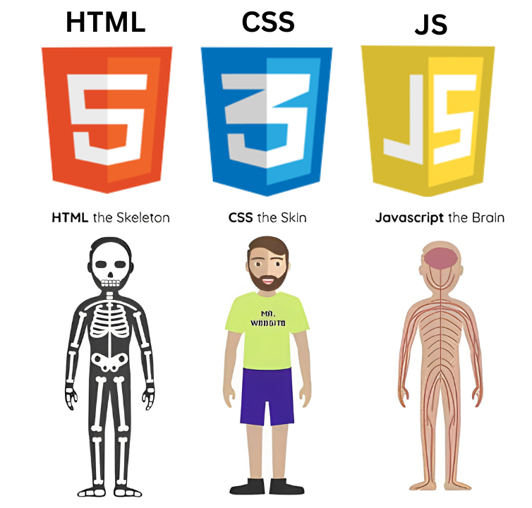

<!-- თქვენი სიტყვებით ახსენით img ფოტო -->

<p>ფოტოზე არის გამოსახული html css javascript ადამიანის მაგალითზე პირველი არის ჩონჩხი ანუ html სტრუქტურა, მეორე არის სტილი css <br><br> ადამიანს აქვს თმა ფერი და აშ. შემდეგი არის ფუნქციონალირი ანუ javascript ნერვი რომელიც საშუალებას აძლევს ადამიანს რომ შეასრულოს სხვადასხვა მოქმედებები  </p>
